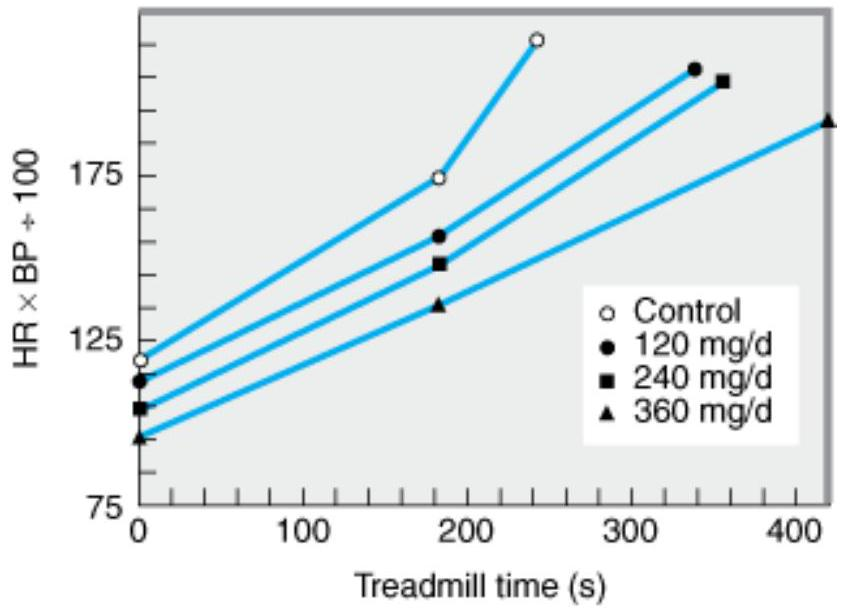

VASODILATORS & THE TREATMENT OF ANGI NA PECTORI S
Angina pectoris is the most common condition involving tissue ischemia in which vasodilator drugs are used. The name denotes chest pain caused by accumulation of metabolites resulting from myocardial ischemia. The organic nitrates, eg, nitroglycerin, are the mainstay of therapy for the immediate relief of angina. Another group of vasodilators, the calcium channel blockers, is also important, especially for prophylaxis, and the Bblockers, which are not vasodilators, are also useful in prophylaxis. New groups of drugs under investigation include fatty acid oxidation inhibitors and selective cardiac rate inhibitors.
Ischemic heart disease is the most common serious health problem in many Western societies. By far the most frequent cause of angina is atheromatous obstruction of the large coronary vessels (atherosclerotic angina, classic angina). However, transient spasm of localized portions of these vessels, which is usually associated with underlying atheromas, can also cause significant myocardial ischemia and pain (vasospastic or variant angina).
The primary cause of angina pectoris is an imbalance between the oxygen requirement of the heart and the oxygen supplied to it via the coronary vessels. In classic angina, the imbalance occurs when the myocardial oxygen requirement increases, as during exercise, and coronary blood flow does not increase proportionately. The resulting ischemia usually leads to pain. Classic angina is therefore "angina of effort." (In some individuals, the ischemia is not always accompanied by pain, resulting in "silent" or "ambulatory" ischemia.) In variant angina, oxygen delivery decreases as a result of reversible coronary vasospasm. Variant angina is also called Prinzmetal's angina.
In theory, the imbalance between oxygen delivery and myocardial oxygen demand can be corrected by decreasing oxygen demand or by increasing delivery (by increasing coronary flow). In effort angina, oxygen demand can be reduced by decreasing cardiac work or, according to recent studies, by shifting myocardial metabolism to substrates that require less oxygen per unit of ATP produced. In variant angina, on the other hand, spasm of coronary vessels can be reversed by nitrates or calcium channel blockers. Lipid-lowering drugs, especially the "statins," have become extremely important in the long-term treatment of atherosclerotic disease (see Chapter 35).
Unstable angina, an acute coronary syndrome, is said to be present when there are episodes of angina at rest and when there is a change in the character, frequency, and duration of chest pain as well as precipitating factors in patients with previously stable angina. Unstable angina is caused by episodes of increased epicardial coronary artery tone or small platelet clots occurring in the vicinity of an atherosclerotic plaque. In most cases, formation of labile nonocclusive thrombi at the site of a fissured or ulcerated plaque is the mechanism for reduction in flow. The course and the prognosis of unstable angina are variable, but this subset of acute coronary syndrome is associated with a high risk of myocardial infarction and death.
Pathophysiology of Angina
Determinants of Myocardial Oxygen Demand
The major determinants of myocardial oxygen requirement are set forth in Table 12-1. As a consequence of its continuous activity, the heart's oxygen needs are relatively high, and it extracts approximately 75% of the available oxygen even in the absence of stress. The myocardial oxygen requirement increases when there is an increase in heart rate, contractility, arterial pressure, or ventricular volume. These hemodynamic alterations frequently occur during physical exercise and sympathetic discharge, which often precipitate angina in patients with obstructive coronary artery disease.
| Wall stress |
|---|
| Intraventricular pressure |
| Ventricular radius (volume) |
| Wall thickness |
| Heart rate |
| Contractility |
The heart favors fatty acids as a substrate for energy production. However, oxidation of fatty acids requires more oxygen per unit of ATP generated than oxidation of carbohydrates. Therefore, drugs that shift myocardial metabolism toward greater use of glucose (fatty acid oxidation inhibitors) have the potential of reducing the oxygen demand without altering hemodynamics.
Determinants of Coronary Blood Flow & Myocardial Oxygen Supply
Increased myocardial demands for oxygen in the normal heart are met by augmenting coronary blood flow. Coronary blood flow is directly related to the perfusion pressure (aortic diastolic pressure) and the duration of diastole. Because coronary flow drops to negligible values during systole, the duration of diastole becomes a limiting factor for myocardial perfusion during tachycardia. Coronary blood flow is inversely proportional to coronary vascular bed resistance. Resistance is determined mainly by intrinsic factors—including metabolic products and autonomic activity—and by various pharmacologic agents. Damage to the endothelium of coronary vessels has been shown to alter their ability to dilate and to increase coronary vascular resistance.
Determinants of Vascular Tone
Arteriolar and venous tone (smooth muscle tension) both play a role in determining myocardial wall stress (Table 12-1). Arteriolar tone directly controls peripheral vascular resistance and thus arterial blood pressure. In systole, intraventricular pressure must exceed aortic pressure to eject blood; arterial blood pressure thus determines the systolic wall stress in an important way. Venous tone determines the capacity of the venous circulation and controls the amount of blood sequestered in the venous system versus the amount returned to the heart. Venous tone thereby determines the diastolic wall stress.
The regulation of smooth muscle contraction and relaxation is shown schematically in Figure 12-1. As shown in Figures 12-1 and 12-2, drugs may relax vascular smooth muscle in several ways:
- (1) Increasing cGMP: As indicated in Figure 12-2, cGMP facilitates the dephosphorylation of myosin light chains, preventing the interaction of myosin with actin. Nitric oxide is an effective activator of soluble guanylyl cyclase and acts mainly through this mechanism. Important molecular donors of nitric oxide include nitroprusside (see Chapter 11) and the organic nitrates used in angina.
- (2) Decreasing intracellular $\mathbf{Ca}^{\mathbf{2+}}$: Calcium channel blockers predictably cause vasodilation because they reduce intracellular $\mathrm{Ca}^{2+}$, a major modulator of the activation of myosin light chain kinase. (Beta blockers and calcium channel blockers reduce $\mathrm{Ca}^{2+}$ influx in cardiac muscle, thereby reducing rate, contractility, and oxygen requirement unless reversed by compensatory responses.)
- (3) Stabilizing or preventing depolarization of the vascular smooth muscle cell membrane: The membrane potential of excitable cells is stabilized near the resting potential by increasing potassium permeability. Potassium channel openers, such as minoxidil sulfate, (see Chapter 11) increase the permeability of $\mathrm{K}^{+}$channels, probably ATP-dependent $\mathrm{K}^{+}$channels. Certain newer agents under investigation for use in angina (eg, nicorandil) may act, in part, by this mechanism.
- (4) Increasing cAMP in vascular smooth muscle cells: As shown in Figure 12-1, an increase in cAMP increases the rate of inactivation of myosin light chain kinase, the enzyme responsible for triggering the interaction of actin with myosin in these cells. This appears to be the mechanism of vasodilation caused by $B_{2}$ agonists, drugs that are not used in angina.
Figure 12-1
Copyright ©2006 by The McGraw-Hill Companies, Inc. All rights reserved.
Control of smooth muscle contraction and site of action of calcium channel-blocking drugs. Contraction is triggered by influx of calcium (which can be blocked by calcium channel blockers) through transmembrane calcium channels. The calcium combines with calmodulin to form a complex that converts the enzyme myosin light chain kinase to its active form (MLCK*). The latter phosphorylates the myosin light chains, thereby initiating the interaction of myosin with actin. Beta ${}_{2}$ agonists (and other substances that increase cAMP) may cause relaxation in smooth muscle by accelerating the inactivation of MLCK (heavy arrows) and by facilitating the expulsion of calcium from the cell (not shown).
Figure 12-2

Copyright ©2006 by The McGraw-Hill Companies, Inc. All rights reserved.
Mechanism of action of nitrates, nitrites, and other substances that increase the concentration of nitric oxide (NO) in smooth muscle cells. (MLCK*, activated myosin light chain kinase [see Figure 12-1]; guanylyl cyclase*, activated guanylyl cyclase; ?, unknown intermediate steps. Steps leading to relaxation are shown with heavy arrows.)
BASI C PHARMACOLOGY OF DRUGS USED TO TREAT ANGI NA
Drug Action in Angina
Three of the four drug groups currently approved for use in angina (organic nitrates, calcium channel blockers, and Bblockers) decrease myocardial oxygen requirement by decreasing the determinants of oxygen demand (heart rate, ventricular volume, blood pressure, and contractility). In some patients, a redistribution of coronary flow may increase oxygen delivery to ischemic tissue. In variant angina, the nitrates and the calcium channel blockers may also increase myocardial oxygen delivery by reversing coronary arterial spasm. The fourth group, represented by ranolazine, is discussed later.
NITRATES & NITRITES
Chemistry
These agents are simple nitric and nitrous acid esters of polyalcohols. Nitroglycerin may be considered the prototype of the group. Although nitroglycerin is used in the manufacture of dynamite, the formulations used in medicine are not explosive. The conventional sublingual tablet form of nitroglycerin may lose potency when stored as a result of volatilization and adsorption to plastic surfaces. Therefore, it should be kept in tightly closed glass containers. It is not sensitive to light.
All therapeutically active agents in the nitrate group have identical mechanisms of action and similar toxicities. Therefore, pharmacokinetic factors govern the choice of agent and mode of therapy when using the nitrates.
Nitroglycerin
(glyceryl trinitrate)
Pharmacokinetics
The liver contains a high-capacity organic nitrate reductase that removes nitrate groups in a stepwise fashion from the parent molecule and ultimately inactivates the drug. Therefore, oral bioavailability of the traditional organic nitrates (eg, nitroglycerin and isosorbide dinitrate) is very low (typically < 10-20%). For this reason, the sublingual route, which avoids the first-pass effect, is preferred for achieving a therapeutic blood level rapidly. Nitroglycerin and isosorbide dinitrate are both absorbed efficiently by this route and reach therapeutic blood levels within a few minutes. However, the total dose administered by this route must be limited to avoid excessive effect; therefore, the total duration of effect is brief (15-30 minutes). When much longer duration of action is needed, oral preparations can be given that contain an amount of drug sufficient to result in sustained systemic blood levels of the parent drug plus active metabolites. Other routes of administration available for nitroglycerin include transdermal and buccal absorption from slow-release preparations; these are described below.
Amyl nitrite and related nitrites are highly volatile liquids. Amyl nitrite is available in fragile glass ampules packaged in a protective cloth covering. The ampule can be crushed with the fingers, resulting in rapid release of inhalable vapors through the cloth covering. The inhalation route provides very rapid absorption and, like the sublingual route, avoids the hepatic first-pass effect. Because of its unpleasant odor and short duration of action, amyl nitrite is now obsolete for angina.
Once absorbed, the unchanged nitrate compounds have half-lives of only 2-8 minutes. The partially denitrated metabolites have much longer half-lives (up to 3 hours). Of the nitroglycerin metabolites (two dinitroglycerins and two mononitro forms), the dinitro derivatives have significant vasodilator efficacy; they probably provide most of the therapeutic effect of orally administered nitroglycerin. The 5-mononitrate metabolite of isosorbide dinitrate is an active metabolite of the latter drug and is available for clinical use as isosorbide mononitrate. It has a bioavailability of 100%.
Excretion, primarily in the form of glucuronide derivatives of the denitrated metabolites, is largely by way of the kidney.
Pharmacodynamics
MECHANISM OF ACTION IN SMOOTH MUSCLE
Nitroglycerin is denitrated by glutathione S-transferase. Free nitrite ion is released, which is then converted to nitric oxide (see Chapter 19). A different unknown enzymatic reaction releases nitric oxide directly from the parent drug molecule. As shown in Figure 12-2, nitric oxide (or an Snitrosothiol derivative) causes activation of guanylyl cyclase and an increase in cGMP, which are the first steps toward smooth muscle relaxation. The production of prostaglandin E or prostacyclin ( PGI $_{2}$ ) and membrane hyperpolarization may also be involved. There is no evidence that autonomic receptors are involved in the primary nitrate response (although autonomic reflex responses are evoked when hypotensive doses are given).
As described below, tolerance is an important consideration in the use of nitrates. While tolerance may be caused in part by a decrease in tissue sulfhydryl groups, it can be only partially prevented or reversed with a sulfhydryl-regenerating agent. Increased generation of oxygen free radicals during nitrate therapy may be another important mechanism of tolerance. Nicorandil and several other investigational antianginal agents appear to combine the activity of nitric oxide release with potassium channel-opening action, thus providing an additional mechanism for causing vasodilation.
ORGAN SYSTEM EFFECTS
Vascular Smooth Muscle
All segments of the vascular system from large arteries through large veins relax in response to nitroglycerin. Veins respond at the lowest concentrations, arteries at slightly higher ones. Arterioles and precapillary sphincters are dilated less than the large arteries and the veins, partly because of reflex responses and partly because different vessels vary in their ability to release nitric oxide. The primary direct result of an effective dose of nitroglycerin is marked relaxation of veins with increased venous capacitance and decreased ventricular preload. Pulmonary vascular pressures and heart size are significantly reduced. In the absence of heart failure, cardiac output is reduced. Because venous capacitance is increased, orthostatic hypotension may be marked and syncope can result. Dilation of some large arteries (including the aorta) may be significant because of their large increase in compliance. Temporal artery pulsations and a throbbing headache associated with meningeal artery pulsations are frequent effects of nitroglycerin and amyl nitrite. In heart failure, preload is often abnormally high; the nitrates and other vasodilators, by reducing preload, may have a beneficial effect on cardiac output in this condition (see Chapter 13). The indirect effects of nitroglycerin consist of those compensatory responses evoked by baroreceptors and hormonal mechanisms responding to decreased arterial pressure (see Figure 6-7); this consistently results in tachycardia and increased cardiac contractility. Retention of salt and water may also be significant, especially with intermediate- and long-acting nitrates. These compensatory responses contribute to the development of tolerance.
In normal subjects without coronary disease, nitroglycerin can induce a significant, if transient, increase in total coronary blood flow. In contrast, there is no evidence that total coronary flow is increased in patients with angina due to atherosclerotic obstructive coronary artery disease. However, some studies suggest that redistribution of coronary flow from normal to ischemic regions may play a role in nitroglycerin's therapeutic effect. Nitroglycerin also exerts a weak negative inotropic effect via nitric oxide.
Other Smooth Muscle Organs
Relaxation of smooth muscle of the bronchi, gastrointestinal tract (including biliary system), and genitourinary tract has been demonstrated experimentally. Because of their brief duration, these actions of the nitrates are rarely of any clinical value. During recent years, the use of amyl nitrite and isobutyl nitrite by inhalation as purported recreational (sex-enhancing) drugs has become popular with some segments of the population. Nitrites release nitric oxide in erectile tissue as well as vascular smooth muscle and activate guanylyl cyclase. The resulting increase in cGMP causes dephosphorylation of myosin light chains and relaxation (Figure 12-2), which enhances erection. Drugs used in the treatment of erectile dysfunction are discussed in Drugs Used in the Treatment of Erectile Dysfunction.
Action on Platelets
Nitric oxide released from nitroglycerin stimulates guanylyl cyclase in platelets as in smooth muscle. The increase in cGMP that results is responsible for a decrease in platelet aggregation. Unfortunately, recent prospective trials have established no survival benefit when nitroglycerin is used in acute myocardial infarction.
Other Effects
Nitrite ion reacts with hemoglobin (which contains ferrous iron) to produce methemoglobin (which contains ferric iron). Because methemoglobin has a very low affinity for oxygen, large doses of nitrites can result in pseudocyanosis, tissue hypoxia, and death. Fortunately, the plasma level of nitrite resulting from even large doses of organic and inorganic nitrates is too low to cause significant methemoglobinemia in adults. However, sodium nitrite is used as a curing agent for meats. In nursing infants, the intestinal flora is capable of converting significant amounts of inorganic nitrate, eg, from well water, to nitrite ion. Thus, inadvertent exposure to large amounts of nitrite ion can occur and may produce serious toxicity.
One therapeutic application of this otherwise toxic effect of nitrite has been discovered. Cyanide poisoning results from complexing of cytochrome iron by the $\mathrm{CN}^{-}$ion. Methemoglobin iron has a very high affinity for $\mathrm{CN}^{-}$; thus, administration of sodium nitrite ( $\mathrm{NaNO}_{2}$ ) soon after cyanide exposure will regenerate active cytochrome. The cyanmethemoglobin produced can be further detoxified by the intravenous administration of sodium thiosulfate ( $\mathrm{Na}_{2}\mathrm{S}_{2}\mathrm{O}_{3}$ ); this results in formation of thiocyanate ion ($\mathrm{SCN}^{-}$), a less toxic ion that is readily excreted. Methemoglobinemia, if excessive, can be treated by giving methylene blue intravenously.
Drugs Used in the Treatment of Erectile Dysfunction
Erectile dysfunction in men has long been the subject of research (by both amateur and professional scientists). Among the substances used in the past and generally discredited are "Spanish Fly" (a bladder and urethral irritant), yohimbine (an $\alpha_{2}$ antagonist; see Chapter 10), nutmeg, and mixtures containing lead, arsenic, or strychnine. Substances currently favored by practitioners of herbal medicine include ginseng and kava.
Scientific studies of the process have shown that erection requires relaxation of the nonvascular smooth muscle of the corpora cavernosa. This relaxation permits inflow of blood at nearly arterial pressure into the sinuses of the cavernosa, and it is the pressure of the blood that causes erection. Physiologic erection occurs in response to the release of nitric oxide from nonadrenergic-noncholinergic nerves (see Chapter 6) associated with parasympathetic discharge. Thus, parasympathetic innervation must be intact and nitric oxide synthesis must be active. (It appears that a similar process occurs in female erectile tissues.) Certain other smooth muscle relaxants—eg, $\mathrm{PGE}_{1}$ analogs or cantagonists—if present in high enough concentration, can independently cause sufficient cavernosal relaxation to result in erection. As noted in the text, nitric oxide activates guanylyl cyclase, which increases the concentration of cGMP, and the latter messenger stimulates the dephosphorylation of myosin light chains (see Figure 12-2) and relaxation of the smooth muscle. Thus, any drug that increases cGMP might be of value in erectile dysfunction if normal innervation is present. Sildenafil (Viagra) acts to increase cGMP by inhibiting its breakdown by phosphodiesterase isoform 5. The drug has been very successful in the marketplace because it can be taken orally. However, sildenafil is of little or no value in men with loss of potency due to cord injury or other damage to innervation and in men lacking libido. Furthermore, sildenafil potentiates the action of nitrates used for angina, and severe hypotension and a few myocardial infarctions have been reported in men taking both drugs. It is recommended that at least 6 hours pass between use of a nitrate and the ingestion of sildenafil. Sildenafil also has effects on color vision, causing difficulty in blue-green discrimination. Two similar PDE-5 inhibitors, tadalafil and vardenafil, are available.
The drug most commonly used in patients who do not respond to sildenafil is alprostadil, a $\mathrm{PGE}_{1}$ analog (see Chapter 18) that can be injected directly into the cavernosa or placed in the urethra as a minisuppository, from which it diffuses into the cavernosal tissue. Phentolamine can be used by injection into the cavernosa. These drugs will cause erection in most men who do not respond to sildenafil.
Toxicity & Tolerance
ACUTE ADVERSE EFFECTS
The major acute toxicities of organic nitrates are direct extensions of therapeutic vasodilation: orthostatic hypotension, tachycardia, and throbbing headache. Glaucoma, once thought to be a contraindication, does not worsen, and nitrates can be used safely in the presence of increased intraocular pressure. Nitrates are contraindicated, however, if intracranial pressure is elevated.
TOLERANCE
With continuous exposure to nitrates, isolated smooth muscle may develop complete tolerance (tachyphylaxis), and the intact human becomes progressively more tolerant when long-acting preparations (oral, transdermal) or continuous intravenous infusions are used for more than a few hours without interruption.
Continuous exposure to high levels of nitrates can occur in the chemical industry, especially where explosives are manufactured. When contamination of the workplace with volatile organic nitrate compounds is severe, workers find that upon starting their work week (Monday), they suffer headache and transient dizziness. After a day or so, these symptoms disappear owing to the development of tolerance. Over the weekend, when exposure to the chemicals is reduced, tolerance disappears, so symptoms recur each Monday. Other hazards of industrial exposure, including dependence, have been reported. There is no evidence that physical dependence develops as a result of the therapeutic use of short-acting nitrates for angina, even in large doses.
The mechanisms by which tolerance develops are not completely understood. As noted above, diminished release of nitric oxide resulting from depletion of tissue thiol compounds may be partly responsible for tolerance to nitroglycerin. Systemic compensation also plays a role in tolerance in the intact human. Initially, significant sympathetic discharge occurs and after one or more days of therapy with long-acting nitrates, retention of salt and water may reverse the favorable hemodynamic changes normally caused by nitroglycerin. These compensatory responses contribute to the development of tolerance.
CARCI NOGENI CITY OF NITRATE AND NITRATE DERIVATIVES
Nitrosamines are small molecules with the structure $\mathrm{R}_{2}$-N-NO formed from the combination of nitrates and nitrites with amines. Some nitrosamines are powerful carcinogens in animals, apparently through conversion to reactive derivatives. While there is no direct proof that these agents cause cancer in humans, there is a strong epidemiologic correlation between the incidence of esophageal and gastric carcinoma and the nitrate content of food in different cultures. Nitrosamines are also found in tobacco and in cigarette smoke. There is no evidence that the small doses of nitrates used in the treatment of angina result in significant body levels of nitrosamines.
Mechanisms of Clinical Effect
The beneficial and deleterious effects of nitrate-induced vasodilation are summarized in Table 12-2.
| Effect | Result |
|---|---|
| Potential beneficial effects | |
| Decreased ventricular volume | |
| Decreased arterial pressure | |
| Decreased ejection time | |
| Vasodilation of epicardial coronary arteries | Relief of coronary artery spasm |
| Increased collateral flow | Improved perfusion to ischemic myocardium |
| Decreased left ventricular diastolic pressure | Improved subendocardial perfusion |
| Potential deleterious effects | |
| Reflex tachycardia | Increased myocardial oxygen requirement |
| Reflex increase in contractility | |
| Decreased diastolic perfusion time due to tachycardia | Decreased coronary perfusion |
NITRATE EFFECTS IN ANGI NA OF EFFORT
Decreased venous return to the heart and the resulting reduction of intracardiac volume are the principal hemodynamic effects. Arterial pressure also decreases. Decreased intraventricular pressure and left ventricular volume are associated with decreased wall tension (Laplace relation) and decreased myocardial oxygen requirement. In rare instances, a paradoxical increase in myocardial oxygen demand may occur as a result of excessive reflex tachycardia and increased contractility.
Intracoronary, intravenous, or sublingual nitrate administration consistently increases the caliber of the large epicardial coronary arteries. Coronary arteriolar resistance tends to decrease, although to a lesser extent. However, nitrates administered by the usual systemic routes also consistently decrease overall coronary blood flow and myocardial oxygen consumption. The reduction in oxygen consumption is the major mechanism for the relief of effort angina.
NITRATE EFFECTS IN VARIANT ANGINA
Nitrates benefit patients with variant angina by relaxing the smooth muscle of the epicardial coronary arteries and relieving coronary artery spasm.
NITRATE EFFECTS IN UNSTABLE ANGINA
Nitrates are also useful in the treatment of this acute coronary syndrome, but the precise mechanism for their beneficial effects is not clear. Because both increased coronary vascular tone and increased myocardial oxygen demand can precipitate rest angina in these patients, nitrates may exert their beneficial effects both by dilating the epicardial coronary arteries and by simultaneously reducing myocardial oxygen demand. As noted above, nitroglycerin also decreases platelet aggregation, and this effect may be of importance in unstable angina.
CALCI UM CHANNEL-BLOCKI NG DRUGS
It has been known since the late 1800s that calcium influx was necessary for the contraction of smooth and cardiac muscle. The discovery of a calcium channel in cardiac muscle was followed by the finding of several different types of calcium channels in different tissues (Table 12-4). The discovery of these channels made possible the development of clinically useful blocking drugs. Although the successful therapeutic blockers developed to date have been exclusively L-type channel blockers, selective blockers of other types of calcium channels are under intensive investigation.
| Type | Channel Name | Where Found | Properties of the Calcium Current | Blocked By |
|---|---|---|---|---|
| L | $\mathrm{CaV}$ 1.1–CaV1.3 | Muscle, neurons (CaV1.4 is found in retina) | Long, large, high threshold | Verapamil, DHPs, $\mathrm{Cd}^{2+}$ |
| T | CaV3.1–CaV3.3 | Heart, neurons | Short, small, low threshold | sFTX, flunarizine, $\mathrm{Ni}^{2+}$ |
| N | CaV2.2 | Neurons | Short, high threshold | o— CTX-GVIA, $\mathrm{Cd}^{2+}$ |
| P/Q | CaV2.1 | Cerebellar Purkinje neurons | Long, high threshold | ö—CTX-MVIIC, ö—Aga-IVA |
| R | CaV2.3 | Neurons | Pacemaking | SNX-482 |
DHPs, dihydropyridines (eg, nifedipine); sFTX, synthetic funnel web spider toxin; $\omega$-CTX, conotoxins extracted from several marine snails of the genus Conus; $\omega$-Aga-IVA, a toxin of the funnel web spider, Agelenopsis aperta; SNX-482, a toxin of the African tarantula, Hysterocrates gigas.
Chemistry & Pharmacokinetics
Verapamil, the first clinically useful member of this group, was the result of attempts to synthesize more active analogs of papaverine, a vasodilator alkaloid found in the opium poppy. Since then, dozens of agents of varying structure have been found to have the same fundamental pharmacologic action (Table 12-5). Three chemically dissimilar calcium channel blockers are shown in Figure 12-4. Nifedipine is the prototype of the dihydropyridine family of calcium channel blockers; dozens of molecules in this family have been investigated, and seven are currently approved in the USA for angina and other indications. Nifedipine is the most extensively studied of this group, but the properties of the other dihydropyridines can be assumed to be similar to it unless otherwise noted.
| Drug | Oral Bioavailability (%) | Half-Life (hours) | Indication | Dosage |
|---|---|---|---|---|
| Dihydropyridines | ||||
| Amlodipine | 65-90 | 30-50 | Angina, hypertension | 5-10 mg orally once daily |
| Felodipine | 15-20 | 11-16 | Hypertension, Raynaud's phenomenon | 5-10 mg orally once daily |
| Isradipine | 15-25 | 8 | Hypertension | 2.5-10 mg orally twice daily |
| Nicardipine | 35 | 2-4 | Angina, hypertension | 20-40 mg orally every 8 hours |
| Nifedipine | 45-70 | 4 | Angina, hypertension, Raynaud's phenomenon | 3-10 mcg/kg IV; 20-40 mg orally every 8 hours |
| Nimodipine | 13 | 1-2 | Subarachnoid hemorrhage | 40 mg orally every 4 hours |
| Nisoldipine | < 10 | 6-12 | Hypertension | 20-40 mg orally once daily |
| Nitrendipine | 10-30 | 5-12 | Investigational | 20 mg orally once or twice daily |
| Miscellaneous | ||||
| Diltiazem | 40-65 | 3-4 | Angina, hypertension, Raynaud's phenomenon | 75-150 mcg/kg IV; 30-80 mg orally every 6 hours |
| Verapamil | 20-35 | 6 | Angina, hypertension, arrhythmias, migraine | 75-150 mcg/kg IV; 80-160 mg orally every 8 hours |

Copyright ©2006 by The McGraw-Hill Companies, Inc. All rights reserved.
Chemical structures of several calcium channel-blocking drugs.
The calcium channel blockers are orally active agents and are characterized by high first-pass effect, high plasma protein binding, and extensive metabolism. Verapamil and diltiazem are also used by the intravenous route.
Pharmacodynamics
MECHANISM OF ACTION
The L-type calcium channel is the dominant type in cardiac and smooth muscle and is known to contain several drug receptors. It has been demonstrated that nifedipine and other dihydropyridines bind to one site, while verapamil and diltiazem appear to bind to closely related but not identical receptors in another region. Binding of a drug to the verapamil or diltiazem receptors also affects dihydropyridine binding. These receptor regions are stereoselective, since marked differences in both stereoisomerbinding affinity and pharmacologic potency are observed for enantiomers of verapamil, diltiazem, and optically active nifedipine congeners.
Blockade by these drugs resembles that of sodium channel blockade by local anesthetics (see Chapters 14 and 26). The drugs act from the inner side of the membrane and bind more effectively to channels in depolarized membranes. Binding of the drug reduces the frequency of opening in response to depolarization. The result is a marked decrease in transmembrane calcium current, resulting in smooth muscle with a long-lasting relaxation (Figure 12-3), and in cardiac muscle with a reduction in contractility throughout the heart and decreases in sinus node pacemaker rate and in atrioventricular node conduction velocity.*
Smooth muscle responses to calcium influx through receptor-operated calcium channels are also reduced by these drugs but not as markedly. The block can be partially reversed by elevating the concentration of calcium, although the levels of calcium required are not easily attainable. Block can also be partially reversed by the use of drugs that increase the transmembrane flux of calcium, such as sympathomimetics.
Other types of calcium channels are less sensitive to blockade by these calcium channel blockers (Table 12-4). Therefore, tissues in which these other channel types play a major role—neurons and most secretory glands—are much less affected by these drugs than are cardiac and smooth muscle.
*At very low doses and under certain circumstances, some dihydropyridines increase calcium influx. Some special dihydropyridines, eg, Bay K 8644, actually increase calcium influx over most of their dose range.
ORGAN SYSTEM EFFECTS
Smooth Muscle
Most types of smooth muscle are dependent on transmembrane calcium influx for normal resting tone and contractile responses. These cells are relaxed by the calcium channel blockers (Figure 12-3). Vascular smooth muscle appears to be the most sensitive, but similar relaxation can be shown for bronchiolar, gastrointestinal, and uterine smooth muscle. In the vascular system, arterioles appear to be more sensitive than veins; orthostatic hypotension is not a common adverse effect. Blood pressure is reduced with all calcium channel blockers. Women may be more sensitive than men to the hypotensive action of diltiazem. The reduction in peripheral vascular resistance is one mechanism by which these agents may benefit the patient with angina of effort. Reduction of coronary arterial tone has been demonstrated in patients with variant angina.
Important differences in vascular selectivity exist among the calcium channel blockers. In general, the dihydropyridines have a greater ratio of vascular smooth muscle effects relative to cardiac effects than do diltiazem and verapamil. Furthermore, the dihydropyridines may differ in their potency in different vascular beds. For example, nimodipine is claimed to be particularly selective for cerebral blood vessels.
Cardiac Muscle
Cardiac muscle is highly dependent upon calcium influx for normal function. I mpulse generation in the sinoatrial node and conduction in the atrioventricular node—so-called slow response, or calciumdependent, action potentials—may be reduced or blocked by all of the calcium channel blockers. Excitation-contraction coupling in all cardiac cells requires calcium influx, so these drugs reduce cardiac contractility in a dose-dependent fashion. In some cases, cardiac output may also decrease. This reduction in cardiac mechanical function is another mechanism by which the calcium channel blockers can reduce the oxygen requirement in patients with angina.
Important differences between the available calcium channel blockers arise from the details of their interactions with cardiac ion channels and, as noted above, differences in their relative smooth muscle versus cardiac effects. Sodium channel block is modest with verapamil and still less marked with diltiazem. It is negligible with nifedipine and other dihydropyridines. Verapamil and diltiazem interact kinetically with the calcium channel receptor in a different manner than the dihydropyridines; they block tachycardias in calcium-dependent cells, eg, the atrioventricular node, more selectively than do the dihydropyridines. (See Chapter 14 for additional details.) On the other hand, the dihydropyridines appear to block smooth muscle calcium channels at concentrations below those required for significant cardiac effects; they are therefore less depressant on the heart than verapamil or diltiazem.
Skeletal Muscle
Skeletal muscle is not depressed by the calcium channel blockers because it uses intracellular pools of calcium to support excitation-contraction coupling and does not require as much transmembrane calcium influx.
Cerebral Vasospasm and Infarct Following Subarachnoid Hemorrhage
Nimodipine, a member of the dihydropyridine group of calcium channel blockers, has a high affinity for cerebral blood vessels and appears to reduce morbidity following a subarachnoid hemorrhage. Nimodipine is therefore labeled for use in patients who have had a hemorrhagic stroke. Although evidence suggests that calcium channel blockers may also reduce cerebral damage following thromboembolic stroke in experimental animals, there is no evidence that this occurs in humans.
Other Effects
Calcium channel blockers minimally interfere with stimulus-secretion coupling in glands and nerve endings because of differences between calcium channels in different tissues, as noted above. Verapamil has been shown to inhibit insulin release in humans, but the dosages required are greater than those used in management of angina.
A significant body of evidence suggests that the calcium channel blockers may interfere with platelet aggregation in vitro and prevent or attenuate the development of atheromatous lesions in animals. Clinical studies have not established their role in human blood clotting and atherosclerosis.
Verapamil has been shown to block the P-glycoprotein responsible for the transport of many foreign drugs out of cancer (and other) cells; other calcium channel blockers appear to have a similar effect. This action is not stereospecific. Verapamil has been shown to partially reverse the resistance of cancer cells to many chemotherapeutic drugs in vitro. Some clinical results suggest similar effects in patients (see Chapter 55).
Toxicity
The most important toxic effects reported for the calcium channel blockers are direct extensions of their therapeutic action. Excessive inhibition of calcium influx can cause serious cardiac depression, including cardiac arrest, bradycardia, atrioventricular block, and heart failure. These effects have been rare in clinical use.
Retrospective case control studies reported that immediate-acting nifedipine increased the risk of myocardial infarction in patients with hypertension. Slow-release and long-acting vasoselective calcium channel blockers are usually well tolerated. However, dihydropyridines, compared with angiotensinconverting enzyme inhibitors, have been reported to increase the risk of adverse cardiac events in patients with hypertension with or without diabetes. These results suggest that relatively short-acting calcium channel blockers have the potential to enhance the risk of adverse cardiac events and should be avoided. Patients receiving B-adrenoceptor-blocking drugs are more sensitive to the cardiodepressant effects of calcium channel blockers. Minor toxicity (troublesome but not usually requiring discontinuance of therapy) includes flushing, dizziness, nausea, constipation, and peripheral edema.
Mechanisms of Clinical Effect
Calcium channel blockers decrease myocardial contractile force, which reduces myocardial oxygen requirements. Inhibition of calcium entry into arterial smooth muscle is associated with decreased arteriolar tone and systemic vascular resistance, resulting in decreased arterial and intraventricular pressure. Some of these drugs (eg, verapamil, diltiazem) also possess a nonspecific antiadrenergic effect, which may contribute to peripheral vasodilation. As a result of all of these effects, left ventricular wall stress declines, which reduces myocardial oxygen requirements. Decreased heart rate with the use of verapamil or diltiazem causes a further decrease in myocardial oxygen demand. Calcium channel-blocking agents also relieve and prevent the primary cause of variant angina—focal coronary artery spasm. Use of these agents has thus emerged as the most effective prophylactic treatment for this form of angina pectoris.
Sinoatrial and atrioventricular nodal tissues, which are mainly composed of calcium-dependent, slow response cells, are affected markedly by verapamil, moderately by diltiazem, and much less by dihydropyridines. Thus, verapamil and diltiazem decrease atrioventricular nodal conduction and are effective in the management of supraventricular reentry tachycardia and in decreasing ventricular responses in atrial fibrillation or flutter. Nifedipine does not affect atrioventricular conduction. Nonspecific sympathetic antagonism is most marked with diltiazem and much less with verapamil. Nifedipine does not appear to have this effect. Thus, significant reflex tachycardia in response to hypotension occurs most frequently with nifedipine and less so with diltiazem and verapamil. These differences in pharmacologic effects should be considered in selecting calcium channel-blocking agents for the management of angina.
Clinical Uses of Calcium Channel- Blocking Drugs
In addition to angina, calcium channel blockers have well-documented efficacy in hypertension (see Chapter 11) and supraventricular tachyarrhythmias (see Chapter 14). They also show promise in a variety of other conditions, including hypertrophic cardiomyopathy, migraine, and Raynaud's phenomenon. The pharmacokinetic properties of these drugs are set forth in Table 12-5. The choice of a particular calcium channel-blocking agent should be made with knowledge of its specific potential adverse effects as well as its pharmacologic properties. Nifedipine does not decrease atrioventricular conduction and therefore can be used more safely than verapamil or diltiazem in the presence of atrioventricular conduction abnormalities. A combination of verapamil or diltiazem with Bblockers may produce atrioventricular block and depression of ventricular function. In the presence of overt heart failure, all calcium channel blockers can cause further worsening of heart failure as a result of their negative inotropic effect. Amlodipine, however, does not increase the mortality of patients with heart failure due to left ventricular systolic dysfunction and can be used safely in these patients. In the presence of relatively low blood pressure, dihydropyridines can cause further deleterious lowering of pressure. Verapamil and diltiazem appear to produce less hypotension and may be better tolerated in these circumstances. In patients with a history of atrial tachycardia, flutter, and fibrillation, verapamil and diltiazem provide a distinct advantage because of their antiarrhythmic effects. In the patient receiving digitalis, verapamil should be used with caution, because it may increase digoxin blood levels through a pharmacokinetic interaction. Although increases in digoxin blood level have also been demonstrated with diltiazem and nifedipine, such interactions are less consistent than with verapamil.
In patients with unstable angina, immediate-release short-acting calcium channel blockers can increase the risk of adverse cardiac events and therefore are contraindicated (see Toxicity, above). However, in patients with non-Q-wave myocardial infarction, diltiazem can decrease the frequency of postinfarction angina and may be used.
BETA-ADRENORECEPTOR- BLOCKI NG DRUGS
Although they are not vasodilators, B-blocking drugs (see Chapter 10) are extremely useful in the management of angina pectoris associated with effort. The beneficial effects of B-blocking agents are related primarily to their hemodynamic effects—decreased heart rate, blood pressure, and contractility—which decrease myocardial oxygen requirements at rest and during exercise. Lower heart rate is also associated with an increase in diastolic perfusion time that may increase coronary perfusion. However, reduction of heart rate and blood pressure and consequently decreased myocardial oxygen consumption appear to be the most important mechanisms for relief of angina and improved exercise tolerance. Beta blockers may also be valuable in treating silent or ambulatory ischemia. Because this condition causes no pain, it is usually detected by the appearance of typical electrocardiographic signs of ischemia. The total amount of "ischemic time" per day is reduced by longterm therapy with a Bblocker. Beta-blocking agents decrease mortality of patients with recent myocardial infarction and improve survival and prevent stroke in patients with hypertension. Randomized trials in patients with stable angina have shown better outcome and symptomatic improvement with Bblockers compared with calcium channel blockers.
Undesirable effects of B-blocking agents in angina include an increase in end-diastolic volume and an increase in ejection time. Increased myocardial oxygen requirements associated with increased diastolic volume partially offset the beneficial effects of B-blocking agents. These potentially deleterious effects of B-blocking agents can be balanced by the concomitant use of nitrates as described below.
The contraindications to the use of Bblockers are asthma and other bronchospastic conditions, severe bradycardia, atrioventricular blockade, bradycardia-tachycardia syndrome, and severe unstable left ventricular failure. Potential complications include fatigue, impaired exercise tolerance, insomnia, unpleasant dreams, worsening of claudication, and erectile dysfunction.
NEWER ANTI ANGI NAL DRUGS
Because of the high incidence of angina, new drugs are actively sought for its treatment. Some of the drugs or drug groups currently under investigation are listed in Table 12-6.
| Metabolic modulators, eg, ranolazine |
|---|
| Direct bradycardic agents, eg, ivabradine |
| Potassium channel activators, eg, nicorandil |
| Rho-kinase inhibitors, eg, fasudil |
| Sulfonylureas, eg, glibenclamide |
| Thiazolidinediones |
| Vasopeptidase inhibitors |
| Nitric oxide donors, eg, l-arginine |
| Capsaicin |
| Amiloride |
The metabolic modulators (eg, ranolazine, trimetazidine) are known as pFOX inhibitors because they partially inhibit the fatty acid oxidation pathway in myocardium. Because metabolism shifts to oxidation of fatty acids in ischemic myocardium, the oxygen requirement per unit of ATP produced increases. Partial inhibition of the enzyme required for fatty acid oxidation (long chain 3-ketoacyl thiolase, LC-3KAT) appears to improve the metabolic status of ischemic tissue. However, blockade of a late sodium current that facilitates calcium entry may play a larger role in the action of ranolazine. So-called bradycardic drugs, relatively selective $I_{f}$ sodium channel blockers (eg, ivabradine), reduce cardiac rate by inhibiting the hyperpolarization-activated sodium channel in the sinoatrial node. No other significant hemodynamic effects have been reported. Ivabradine appears to reduce anginal attacks with an efficacy similar to that of calcium channel blockers and blockers.
CLI NI CAL PHARMACOLOGY OF DRUGS USED I N THE TREATMENT OF ANGI NA
Because the most common cause of angina is atheroclerotic disease of the coronaries (CAD), therapy must address the underlying causes of CAD as well as the immediate symptoms of angina. In addition to reducing the need for antianginal therapy, such primary management has been shown to reduce major cardiac events such as myocardial infarction.
First-line therapy of CAD depends on modification of risk factors such as smoking, hypertension (Chapter 11), hyperlipidemia (Chapter 35), obesity, and clinical depression. In addition to antiplatelet drugs (Chapter 34) are very important.
Specific pharmacologic therapy to prevent myocardial infarction and death consists of antiplatelet agents (aspirin, clopidogrel) and lipid-lowering agents, especially statins. Aggressive therapy with statins has been shown to reduce the incidence and severity of ischemia in patients during exercise testing and the incidence of cardiac events (including infarction and death) in clinical trials. Angiotensin-converting enzyme inhibitors also reduce the risk of adverse cardiac events in patients at high risk for CAD although they have not been consistently shown to exert antianginal effects. In patients with unstable angina and non-ST-segment elevation myocardial infarction, aggressive therapy consisting of coronary stenting, antilipid drugs, heparin, and antiplatelet agents is recommended.
The treatment of established angina and other manifestations of myocardial ischemia includes the corrective measures described above as well as treatment to prevent or relieve symptoms. Treatment of symptoms is based on reduction of myocardial oxygen demand and increase of coronary blood flow to the potentially ischemic myocardium to restore the balance between myocardial oxygen supply and demand.
Angina of Effort
Many studies have demonstrated that nitrates, calcium channel blockers, and Bblockers increase time to onset of angina and ST depression during treadmill tests in patients with angina of effort (Figure 12-5). Although exercise tolerance increases, there is usually no change in the angina threshold, ie, the rate-pressure product at which symptoms occur.
Copyright ©2006 by The McGraw-Hill Companies, Inc. All rights reserved.
Effects of diltiazem on the double product (heart rate times systolic blood pressure) in a group of 20 patients with angina of effort. In a double-blind study using a standard protocol, patients were tested on a treadmill during treatment with placebo and three doses of the drug. Heart rate (HR) and systolic blood pressure (BP) were recorded at 180 seconds of exercise (midpoints of lines) and at the time of onset of anginal symptoms (rightmost points). Note that the drug treatment decreased the double product at all times during exercise and prolonged the time to appearance of symptoms. (Data from Lindenberg BS et al: Efficacy and safety of incremental doses of diltiazem for the treatment of angina. J Am Coll Cardiol 1983; 2: 1129. Used with permission of the American College of Cardiology.)
For maintenance therapy of chronic stable angina, long-acting nitrates, calcium channel-blocking agents, or Bblockers may be chosen; the best choice of drug will depend on the individual patient's response. In hypertensive patients, monotherapy with either slow-release or long-acting calcium channel blockers or Bblockers may be adequate. In normotensive patients, long-acting nitrates may be suitable. The combination of a Bblocker with a calcium channel blocker (eg, propranolol with nifedipine) or two different calcium channel blockers (eg, nifedipine and verapamil) has been shown to be more effective than individual drugs used alone. If response to a single drug is inadequate, a drug from a different class should be added to maximize the beneficial reduction of cardiac work while minimizing undesirable effects (Table 12-7). Some patients may require therapy with all three drug groups.
| Nitrates Alone | Beta Blockers or Calcium Channel Blockers | Combined Nitrates with Beta Blockers or Calcium Channel Blockers | |
|---|---|---|---|
| Heart rate | Reflex ${}^{1}$ increase | Decrease | Decrease |
| Arterial pressure | Decrease | Decrease | Decrease |
| End-diastolic volume | Decrease | Increase | None or decrease |
| Contractility | Reflex ${}^{1}$ increase | Decrease | None |
| Ejection time | Decrease ${}^{1}$ | Increase | None |
${}^{1}$ Baroreceptor reflex.
Surgical revascularization (ie, coronary artery bypass grafting [CABG]) and catheter-based revascularization (ie, percutaneous coronary intervention [PCI]) are the primary methods for promptly restoring coronary blood flow and increasing oxygen supply to the myocardium.
Vasospastic Angina
Nitrates and the calcium channel blockers are effective drugs for relieving and preventing ischemic episodes in patients with variant angina. In approximately 70% of patients treated with nitrates plus calcium channel blockers, angina attacks are completely abolished; in another 20%, marked reduction of frequency of anginal episodes is observed. Prevention of coronary artery spasm (in the presence or absence of fixed atherosclerotic coronary artery lesions) is the principal mechanism for this beneficial response. All presently available calcium channel blockers appear to be equally effective, and the choice of a particular drug should depend on the patient, as indicated above. Surgical revascularization and angioplasty are not indicated in patients with variant angina.
Unstable Angina & Acute Coronary Syndromes
In patients with unstable angina with recurrent ischemic episodes at rest, recurrent platelet-rich nonocclusive thrombus formation is the principal mechanism. Aggressive antiplatelet therapy with a combination of aspirin and clopidigrel is indicated. Intravenous heparin or subcutaneous low-molecularweight heparin is also indicated in most patients. If PCI with stenting is required, glycoprotein IIb/IIIa inhibitors such as abciximab should be added. In addition, therapy with nitroglycerin and Bblockers should be considered; calcium channel blockers should be added in refractory cases for relief of myocardial ischemia. Primary lipid-lowering and ACE-inhibitor therapy should also be initiated.
PREPARATI ONS AVAI LABLE
NITRATES & NITRITES
Amyl nitrite (generic)
Inhalant: 0.3 mL capsules
I sosorbide dinitrate (generic, I sordil)
Oral: 5, 10, 20, 30, 40 mg tablets; 5, 10 mg chewable tablets
Oral sustained-release (Isochron, Dilatrate SR): 40 mg tablets and capsules
Sublingual: 2.5, 5 mg sublingual tablets
I sosorbide mononitrate (Ismo, others)
Oral: 10, 20 mg tablets; extended-release 30, 60, 120 mg tablets
Nitroglycerin
Sublingual or buccal: 0.3, 0.4, 0.6 mg tablets; 0.4 mg/metered dose aerosol spray
Oral sustained-release (generic, Nitro-Time): 2.5, 6.5, 9 mg capsules
Parenteral (generic): 5 mg/mL for IV administration; 100, 200, 400 mcg/mL in dextrose for IV infusion
Transdermal patches (generic, Nitrek, Nitro-Dur, Transderm-Nitro): to release at rates of 0.1, 0.2, 0.3, 0.4, 0.6, or 0.8 mg/h
Topical ointment (generic, Nitro-Bid): 20 mg/mL ointment ( 1 inch, or 25 mm , of ointment contains about 15 mg nitroglycerin)
CALCI UM CHANNEL BLOCKERS
Amlodipine (Norvasc, Amvaz)
Oral: 2.5, 5, 10 mg tablets
Diltiazem (Cardizem, generic)
Oral: 30, 60, 90, 120 mg tablets (unlabeled in hypertension)
Oral sustained-release (Cardizem CD, Cardizem SR, Dilacor XL): 60, 90, 120, 180, 240, 300, 360, 420 mg capsules, tablets
Parenteral: 5 mg/mL for injection
Felodipine (Plendil)
Oral extended-release: 2.5, 5, 10 mg tablets
I sradipine (DynaCirc)
Oral: 2.5, 5 mg capsules; 5, 10 mg controlled-release tablets
Nicardipine (Cardene, others)
Oral: 20, 30 mg capsules
Oral sustained-release (Cardene SR): 30, 45, 60 mg capsules)
Parenteral (Cardene I.V.): 2.5 mg/mL
Nifedipine (Adalat, Procardia, others)
Oral: 10, 20 mg capsules (unlabeled in hypertension)
Oral extended-release (Procardia XL, Adalat CC): 30, 60, 90 mg tablets
Nimodipine (Nimotop)
Oral: 30 mg capsules. (Labeled for use in subarachnoid hemorrhage, not angina.)
Nisoldipine (Sular)
Oral extended-release: 10, 20, 30, 40 mg tablets
Verapamil (generic, Calan, Isoptin)
Oral: 40, 80, 120 mg tablets
Oral sustained-release (Calan SR, Verelan): 100, 120, 180, 240 mg tablets or capsules
Parenteral: 2.5 mg/mL for injection
BETA BLOCKERS
See Chapter 10.
METABOLI SM MODI FI ERS
Ranolazine (Ranexa)
Oral: 500 mg extended-release tablets
REFERENCES
- Borer JS et al: Antianginal and antiischemic effects of ivabradine, an I(f) inhibitor, in stable angina: A randomized, double-blind, multicentered, placebo-controlled trial. Circulation 2003;107:817. [PMID: 12591750]
- Braunwald E et al: ACC/AHA Guideline update for the management of patients with unstable angina and non-ST-segment elevation myocardial infarction—2002. Circulation 2002;106:1893. [PMID: 12356647]
- Carmichael P, Lieben J: Sudden death in explosives workers. Arch Environ Health 1963; 7:50.
- Chaitman BR: Efficacy and safety of a metabolic modulator drug in chronic stable angina: Review of evidence from clinical trials. J Cardiovasc Pharmacol Ther 2004;9(Suppl 1):S47.
- Chatterjee K: Ischemic heart disease. In: Stein JH (editor). Internal Medicine, 5th ed. Little, Brown, 1998.
- DeWitt CR, Waksman JC: Pharmacology, pathophysiology and management of calcium channel blocker and beta-blocker toxicity. Toxicol Rev 2004;23:223. [PMID: 15898828]
- Gibbons RJ et al: ACC/AHA 2002 guideline update for the management of patients with chronic stable angina—summary article: A report of the American College of Cardiology/American Heart Association Task Force on practice guidelines (Committee on the Management of Patients With Chronic Stable Angina). J Am Coll Cardiol 2003; 41: 159. [PMID: 12570960]
- Ignarro LJ et al: Mechanism of vascular smooth muscle relaxation by organic nitrates, nitrites, nitroprusside, and nitric oxide: Evidence for the involvement of S-nitrosothiols as active intermediates. J Pharmacol Exp Ther 1981; 218: 739. [PMID: 6115052]
- Lacinova L: Voltage-dependent calcium channels. Gen Physiol Biophys 2005;24(Suppl 1):1.
- LaPorte R, Laher I: Pharmacological modulation of sarcoplasmic reticulum function in smooth muscle. Pharmacol Rev 2004;56:439. [PMID: 15602008]
- Maxey KM: Eicosanoids acting via nuclear receptors: The 15-deoxy PGJ compounds and congeners. Prostaglandins Other Lipid Mediat 2000; 62: 1.
- McAdam BF et al: Systemic biosynthesis of prostacyclin by cyclooxygenase (COX)-2: The human pharmacology of a selective inhibitor of COX-2. Proc Natl Acad Sci U S A 1999;96:272. [PMID: 9874808]
- Narumiya S, FitzGerald GA: Genetic and pharmacological analysis of prostanoid receptor function. J Clin Invest 2001;108:25. [PMID: 11435452]
- Olschewski H et al: Inhaled Iloprost for severe pulmonary hypertension. N Engl J Med 2002;347:322. [PMID: 12151469]
- Pepine CJ, Wolff AA: A controlled trial with a novel anti-ischemic agent, ranolazine, in chronic stable angina pectoris that is responsive to conventional antianginal agents. Am J Cardiol 1999;84:46. [PMID: 10404850]
- Rocca B, FitzGerald GA: Cyclooxygenases and prostaglandins: shaping up the immune response. Int Immunopharmacol 2002;2:603. [PMID: 12013502]
- Smith WL, Dewitt DL, Garavito MR: Cyclooxygenases: Structural, cellular, and molecular biology. Annu Rev Biochem 2000;69:145. [PMID: 10966456]
- Smyth EM, FitzGerald GA: Prostaglandin mediators. In: Bradshaw RD, Dennis EA (editors): Handbook of Cell Signaling . Academic Press, 2003: 265.
- Tilley SL, Coffman TM, Koller BH: Mixed messages: Modulation of inflammation and immune responses by prostaglandins and thromboxanes. J Clin Invest 2001;108:15. [PMID: 11435451]
- Wang D, Dubois RN: Prostaglandins and cancer. Gut 2006; 55: 115. [PMID: 16118353]
- Wang D, Mann JR, DuBois RN: The role of prostaglandins and other eicosanoids in the gastrointestinal tract. Gastroenterology 2005; 128: 1445. [PMID: 15887126]